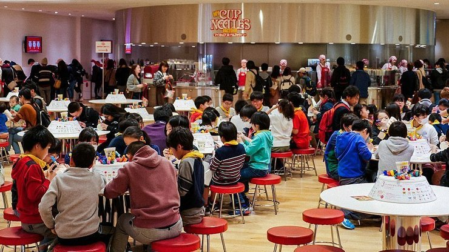

Cup Noodles Museum
安藤百福発明記念館
The Cup Noodles Museum (also known as the 安藤百福発明記念館, Andō Momofuku Hatsumei Kinenkan) is a fun and interactive museum in Yokohama's Minato Mirai District that shows the history of instant ramen noodles using a combination of whimsical exhibits and hands on workshops. It was opened by the Nissin Food company, whose founder invented instant ramen noodles in 1958 as a fast and convenient food. It is the second cup noodles museum to open in Japan; the first is the Cupnoodles Museum in Ikeda, north of Osaka.
The museum shows a short film introducing the history of instant noodles, together with unconventional exhibits such as a replica of the shed where instant noodles were invented and a visual timeline of instant noodle products from around the world. A small collection of modern art pieces are also on display and are meant to represent Nissin's approach to creating new and innovative products, some of which include cup noodles (instant ramen in a styrofoam cup) and space ramen (for astronauts).
There are also several activities at the museum including the popular My Cupnoodles Factory workshop where you can create your own original cup noodle by mixing and matching a variety of soup flavors and toppings. It costs 500 yen and may sell out on busy days. In the My Chicken Ramen workshop you can make your own instant ramen noodles from scratch, package them, and take them home to eat. The workshop takes about 90 minutes, costs 600 yen, and requires advance reservations.
The museum also has the Cupnoodles Park (500 yen) children's playground, which is modeled after a factory where kids play noodles being made and shipped out; and the entertaining Noodles Bazaar, which is a food court designed to look like an Asian night market complete with the sounds of hawkers and traffic. A variety of noodle dishes and canned drinks from around the world are served there, and small portions allow you to sample a variety of flavors at 500 yen per dish.